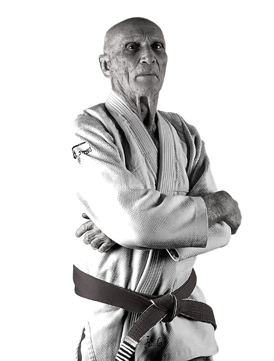

Início da jornada
Durante um treino na academia, meu mestre me contou sobre uma lenda: o Troféu Dourado do Jiu-Jitsu, uma premiação lendária perdida há décadas. Ele me entregou um diário antigo com pistas para encontrar este troféu e eu decidi segui-las!
Rio de Janeiro
Você começa sua jornada no Rio de Janeiro, visitando a histórica Academia Gracie ao amanhecer para encontrar a primeira pista.
São Paulo
Em São Paulo, você visita o famoso ginásio do Ibirapuera. No diário, uma das pistas indica que para localizar o troféu você deve procurar a próxima pista em um local importante para as artes marciais. Por onde você começa?
Fim da jornada
Você decide que a busca é grande demais e volta para casa, mas sempre se pergunta que glórias teria alcançado se tivesse encontrado o troféu.